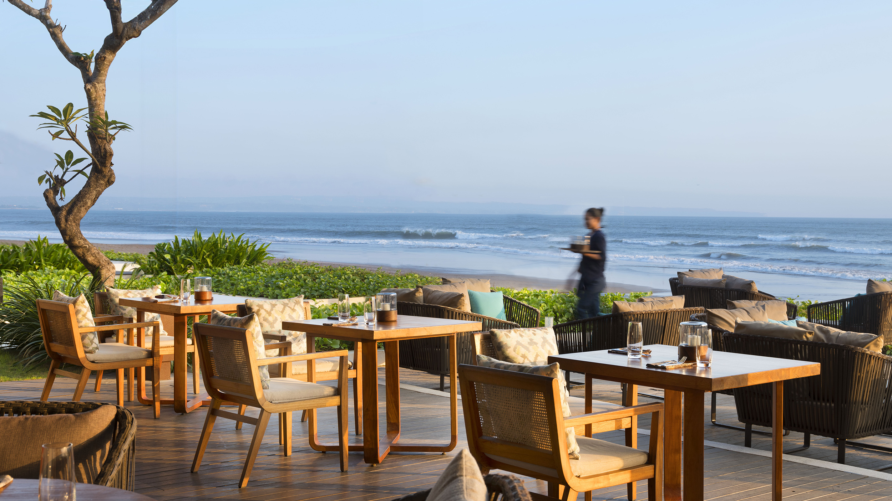
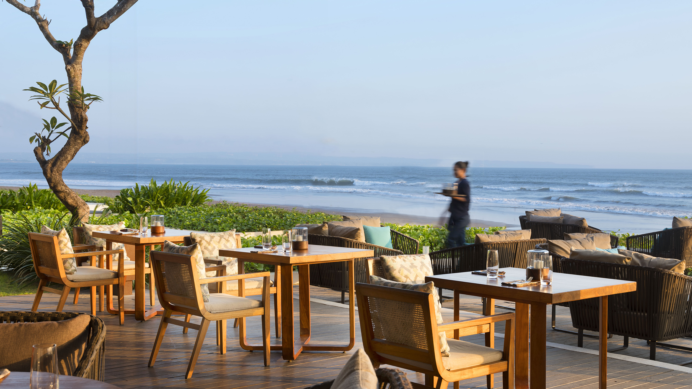

Places To Eat in Bali
 

SeaSalt Seminyak
Located alongside Seminyak Beach, Seaside Seminyak has fresh seafood with fantastic ocean viwews. Signature dishes often include grilled fish, prawn skewers, and tropical cocktails. With the casual scene and live music during sunset, it seems to be a great spot for both tourists and locals that want the ultimate dining experience at Bali.
Lotus Blossom Café
Overlooking a temple pond in Ubud, Lotus Blossom cafe has a serene and relaxing atmosphere with emphasizes on healthy and flavorful dishes. From Balinese salads as well to vegetarian friendly food, every meal is often paired with herbal teas or tropical smoothies. It also has lotus-themed decor and garden seating to create the perfect picture moment and best for those enjoy relaxing.
Warung Bambu Indah
Warung Bali Indah is an authentic Balinese eatery which offers family cooking in a bamboo hut — try the nasi campur and fresh coconut juice. This rustic vibe like a town etting offers a casual ambience and cultural authenticity which makes a must-visit for travelers who want to experience genuine Balinese food.